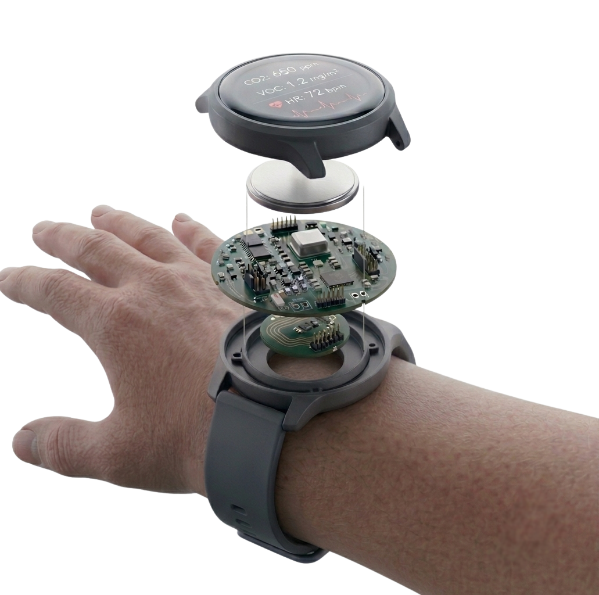
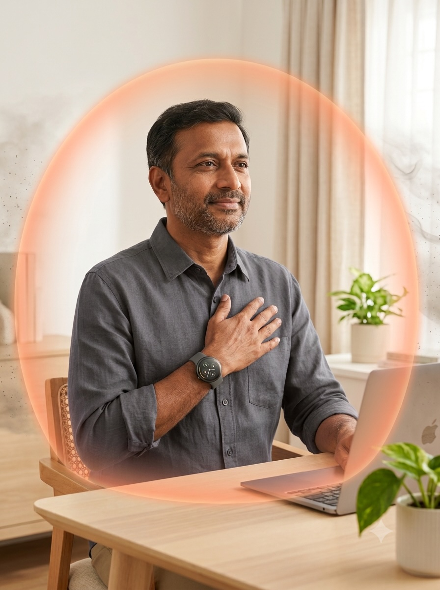

You can't see it.
You're breathing it right now.
Every day, invisible spikes in CO₂ and toxic particulates build up in your home and office that you'd never know. PoWear is a wearable safety device that senses hazardous air in real time and shows you exactly where to act, before it affects your family's health.
Sense the danger. See it. Stop it.
Three technologies work together in every PoWear to catch hazardous air before it catches you.
The Detection Engine
Trained on 89.1 million real-world readings from 30 homes, PoWear's sensors know exactly what a dangerous spike in CO₂ or particulate matter looks like, before it's harmful.
The PoWear Wearable
The wristband that started it all. PoWear turns invisible pollution into a glowing AR bubble you can point a fan at, so you fix the danger zone in seconds, not hours.
The On-Device AI
On-device AI learns your household's risky habits like frying, poor ventilation, overnight buildup and warns you before they happen again. No cameras, no cloud, no privacy risk.

PoWear doesn't just warn you. It works.
Tested across 6 real home and office setups, PoWear drove hazardous CO₂ levels down to safe levels dramatically faster than doing nothing and hoping for the best.
Indoor CO₂ Reduction
Target safety baseline threshold set to 800 PPM across all deployments.
Be the first to wear PoWear.
Join the waitlist to get early access, launch pricing, and updates as we roll out PoWear to homes and offices.
Backed by peer-reviewed science.
PoWear isn't a hunch, it's built on 89.1 million real sensor readings and published, peer-reviewed research. The full dataset, firmware, and models are open for independent verification.
@article{karmakar2024indoor,
title={Indoor air quality dataset with activities of daily living in low to middle-income communities},
author={Karmakar, Prasenjit and Pradhan, Swadhin and Chakraborty, Sandip},
journal={Advances in Neural Information Processing Systems},
volume={37},
pages={70076--70100},
year={2024}
}
@inproceedings{karmakar2026invisible,
title={From Invisible to Actionable: Augmented Reality Interactions with Indoor CO2},
author={Karmakar, Prasenjit and Yadav, Manjeet and Rout, Swayanshu and Pradhan, Swadhin and Chakraborty, Sandip},
booktitle={Proceedings of the 2026 CHI Conference on Human Factors in Computing Systems},
pages={1--20},
year={2026}
}
@article{karmakar2026pohar,
title={PoHAR: Understanding Hyperlocal Human Activities with Pollution Sensor Networks},
author={Karmakar, Prasenjit and Reddy, Karthik and Chakraborty, Sandip},
journal={arXiv preprint arXiv:2605.09434},
year={2026}
}